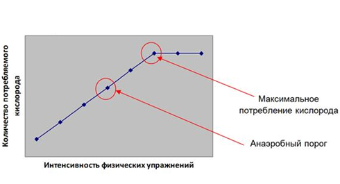
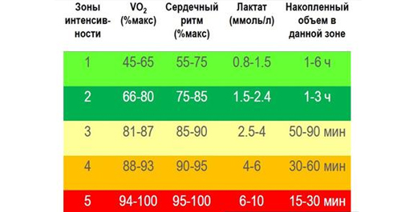

Чем отличаются аэробные (кардио) и анаэробные (силовые) тренировки, и почему мы не можем выполнять подтягивания на перекладине или отжимания на брусьях так же долго, как крутить педали велосипеда или бегать? Секрет кроется в существовании так называемого анаэробного порога, после достижения которого мышцы начинают "отключаться".
Наша физическая активность, по сути, представляет собой окислительный процесс, происходящий в клетках мышечных тканей при участии сердечно-сосудистой и дыхательной систем. Как известно из школьных курсов биологии и химии, данный процесс происходит при участии кислорода, поступающего в мышцы от сердца через артерии и сеть мелких кровеносных сосудов, капилляров, с дальнейшим выделением энергии. В мышцах кислород замещается углекислым газом, и насыщенная им кровь уже по венам обратно через сердце поступает в легкие, а далее через органы дыхания он выводится из нашего тела.

Перейдём к чуть более подробному рассмотрению вопроса с точки зрения биохимии. Основным и самым универсальным источником энергии для повседневной активности и в принципе любых метаболических процессов живого организма является глюкоза (C6H12O6). Однако в чистом виде ни у животных, ни у растений это соединение не находится. В нашем случае восстановление этого жизненно важного соединения происходит посредством ферментного расщепления сложного полисахарида (C6H10O6)n, гликогена. Его запасы находятся в мышечных тканях (примерно 1% от общей массы, при активной нагрузке расходуются в первую очередь) и в печени (до 5-6% от массы, примерно 100 – 120 г для взрослого человека). Стоит отметить, что только гликоген, запасённый в клетках печени (т.н. гепатоцитах), может быть переработан в глюкозу для питания организма в целом.
Под воздействием поступающего извне кислорода расщепленный гликоген распадается на глюкозу, которая, окисляясь, высвобождает необходимую для обменных процессов энергию. Этот процесс называется гликолиз, и про него мы уже достаточно подробно рассказывали в инфопосте о разных видах мышц и их энергообеспечении. Главное, о чем нужно вспомнить сейчас, это о существовании двух видов гликолиза — аэробный и анаэробный.
При увеличении нагрузки во время длительной физической активности первый механизм расщепления гликогена рано или поздно переходит во второй . Всё определяется соотношением между скоростью выработки лактата, его диффузией в кровь и поглощением мышцами, сердцем, печенью и почками. Лактат образуется даже в состоянии покоя (попадая из мышц в систему кровообращения, он в итоге либо перерабатывается в глюкозу в печени, либо используется как топливо), но пока темпы его выработки равны потреблению, никаких функциональных ограничений не появляется. Таким образом, существует некая граница или порог, при котором скорость накопления этого самого лактата начинает превышать скорость его выведения.
Что такое анаэробный порог?
С точки зрения биохимии анаэробный порог (АнП, в некоторых источниках «лактатный») – это величина (единицы измерения: мл/кг/мин), показывающая, какое количество кислорода может потреблять человек (на единицу своей массы) без накопления молочной кислоты. С точки зрения тренировочной активности, АнП – это интенсивность (проще всего за основу взять частоту сердечных сокращений, ЧСС) упражнения, при котором нейтрализация лактата не поспевает за его выработкой.

Как правило, ЧСС АнП примерно равна 85 – 90% от максимальной ЧСС. Последнюю величину можно измерить, либо сделав серию коротких спринтерских рывков на 60 – 100 м с последующим замером при помощи пульсометра величины ЧСС и подсчёта среднего значения, либо посредством выполнения «на скорость» и максимально возможное количество повторений двух-трёх серий силовых упражнений со своим весом, таких как, например: подтягивания, отжимания на брусьях, плиометрические отжимания от пола, бурпи, приседания и пр. Главное – резкость движения, скорость и максимальная работа «до отказа». Замеры по пульсометру проводятся после каждой серии, в конце так же высчитывается среднее значение, которое затем и берётся за основу. Очевидно, что полученный результат строго индивидуален и в определенном приближении его можно считать ориентиром своего реального значения АнП. Наиболее точно же замеры значения порога проводятся либо при помощи специальных портативных лактометров, либо с использованием сложного лабораторного оборудования по заранее разработанным и утвержденным методикам. Тем не менее существуют условные рекомендуемые пульсовые зоны, соответствующие тому или иному характеру тренировки в зависимости от возраста человека.

Тренировка сердечно-сосудистой системы и выносливости – это всегда занятия при ЧСС, немного меньшем значения АнП. В свою очередь наиболее эффективные с точки зрения жиросжигания, то есть активизации липидного обмена, – это тренировки на низком (50-60% от максимума) пульсе.
Можно ли каким-то образом увеличить значение АнП?
Конечно! Более того, анаэробный порог можно повышать на протяжении всей своей жизни (в отличие от, например, уровня максимального потребления кислорода, который рано или поздно выйдет на плато, — ограничение, вызванное генетическими факторами, в частности уровнем гемоглобина в крови). Исследования показывают, что повышение АнП происходит двумя путями: за счёт снижения уровня производства лактата и за счёт увеличения скорости его выведения.
Если представить, что кислород – это тоже топливо, как, например, бензин, а наше сердце – не что иное, как двигатель внутреннего сгорания, то, по аналогии с конструкцией разных производителей, один отдельно взятый человек будет потреблять тот же кислород более экономично, чем другой. Однако, как и двигателю, всей сердечно-респираторной системе посредством специализированных тренировок можно сделать своеобразный «чип-тюнинг».
Здесь работает всем известный принцип: хочешь улучшить какое-то качество в себе — дай ему стимул для роста. Соответственно, чтобы увеличить свой АнП, необходимо регулярно проводить тренировки на уровне ЧСС, чуть выше его значения (условно, 95% от максимальной ЧСС). Например, если твой текущий АнП находится на ЧСС 165 уд/мин, то одну, максимум две тренировки в неделю надо проводить при пульсе 170 уд/мин.
Существует четыре основных адаптационных изменения, приводящих к увеличению анаэробного порога.
1. Увеличение количества и размера митохондрий (они являются факторами аэробного производства энергии в мышечных клетках). Итог: больше энергии аэробным путём.
2. Повышение плотности капилляров. Итог: на одну клетку приходится больше капилляров, повышается эффективность доставки питательных веществ и удаления побочных продуктов
3. Увеличение активности аэробных ферментов (являются ускорителями химических реакций в митохондриях). Итог: больше энергии за более короткий промежуток времени.
4. Повышение миоглобина (по аналогии с гемоглобином в крови переносит кислород в мышечных тканях от мембраны к митохондриям). Итог: повышение концентрации миоглобина, а значит – увеличение количества кислорода, доставляемого к митохондриям для выработки энергии.